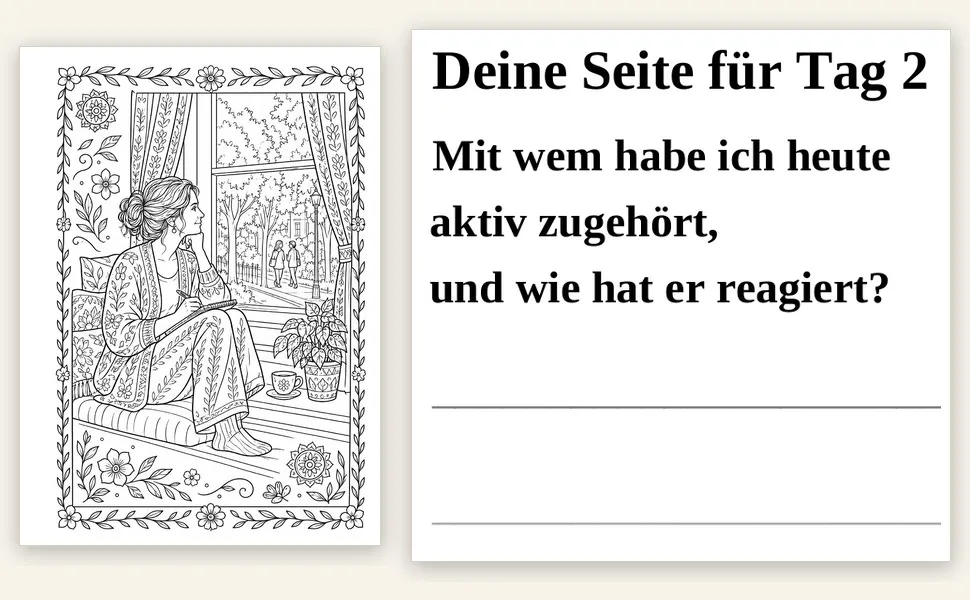

In 30 Tagen zur emphatischeren Persönlichkeit
30 Tage lang jeden Tag ein Beispiel aus dem Alltag und eine kurze Übung, um Empathie zu üben.
Öffnet amazon.de in einem neuen Tab.
Hörst du zu, oder wartest du nur, bis du dran bist? Wahrscheinlich kennst du beide Seiten.
Da ist das Gespräch, in dem der andere schon an seine Antwort denkt. Und der Moment, in dem jemand einfach nachfragt und du dich verstanden fühlst. Empathie ist zum Teil Veranlagung. Vieles davon lässt sich aber üben, Schritt für Schritt und im ganz normalen Alltag. Dieses Buch begleitet dich dabei 30 Tage lang. Es geht ums Zuhören, ohne gleich einen Rat zu geben, ums Hineinversetzen, um Streit, Partnerschaft, Familie und Arbeit, um Menschen in schweren Zeiten und darum, mitzufühlen, ohne dich auszulaugen. Geschrieben in der Du-Form und ohne Fachchinesisch. Ein Versprechen, dass du danach ein anderer Mensch bist, sind die 30 Tage nicht. Empathie wächst langsam und durch Wiederholung.

Blick ins Buch: Zu jedem Tag eine Arbeitsseite und ein Ausmalbild
Jeder der 30 Tage hat drei Teile: worum es geht, wie du übst, mit einem Beispiel aus dem Alltag, und eine Übung für den Tag. Nach jedem Tag folgt eine Arbeitsseite mit Fragen und Platz zum Schreiben, direkt im Buch. Dazu gehört zu jedem Tag ein Ausmalbild. Beim Ausmalen kommst du zur Ruhe. Wenn dich eine Übung stark aufwühlt, darfst du aufhören. Hilfe und Anlaufstellen stehen im Anhang. Das Buch ist ein Übungsbuch und ersetzt keine Beratung oder Therapie.
Lesen allein reicht nicht. Diese Übungen aus dem Buch probierst du im Alltag aus.
Zuhören, ohne gleich einen Rat zu geben
Du suchst dir ein längeres Gespräch aus und gibst darin keinen einzigen Rat. Stattdessen sagst du in eigenen Worten, was du verstanden hast, und stellst eine offene Frage.
Das Gefühl des anderen benennen
Im Streit sagst du in einem Satz, was der andere gerade fühlt. Damit gibst du ihm nicht recht. Du zeigst nur, dass du verstanden hast, worum es ihm geht.
Auf kleine Signale eingehen
Seufzt dein Gegenüber oder zeigt dir etwas, gehst du darauf ein. Und wenn jemand von einem Problem erzählt, fragst du zuerst: „Willst du einen Rat oder soll ich einfach zuhören?“
Ein freundliches Nein
Du legst dir einen Satz zurecht, mit dem du Nein sagst: freundlich und ohne lange Rechtfertigung. Nein sagen gehört zur Empathie dazu.
Dieses Buch ist ein Ratgeber und kein Ersatz für eine Therapie oder Beratung. Wenn es dir gerade richtig schlecht geht, hol dir bitte Hilfe, zum Beispiel bei der Telefonseelsorge unter 0800 111 0 111 (kostenlos, rund um die Uhr).
Öffnet amazon.de in einem neuen Tab.